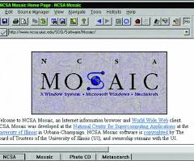

before google or firefox. there was mosaic in the 1980. It was an amazing program allowing people to use HTML it was well known in the 1980-1990 for it be able to use text and images on your very own computer an marvel of it time. thanks to mosaic we have modern webpages. and before even that there where WAN and LANS you might have heard of lan servers since of you played any online games and youre friends didn't have any wifi you could host an lan server. WAN servers are wide area networks (lan stands for local area networks). now web Development has changed since the beginning. now we have websites like youtube or amazon that allow us to buy objects form an websites and they come straight to your door step while you watch your ocean documentry on your cell phone.
The tips to making an great website. first tip: is to keep your website miniumlistic. not too many features. more fetures more the confusing it is, and make the website visually see able. Have the website elements be reasonable. Second tip: allow elements to look and be placed reasonablely. Thrid tip: large letter sizes are great have reading the website feel like reading an newpaper article. Fourth tip: your website gotta be easy to navagate. No button that lead to no where. No useless options that do nothing to the website that for you it look cool. Make your website easy to navagate have sources for your texts, and finale tip: allow your website to be device friendly. If the viewer of your website is using an phone make your website work with the phone. or if they are viewing the website on an adnormal device allow that said adnormal device to still vview your webpage.